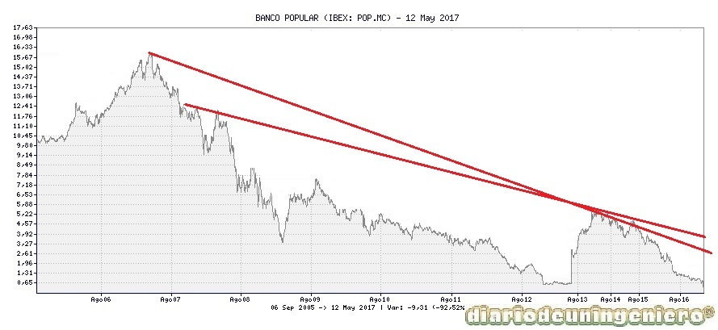
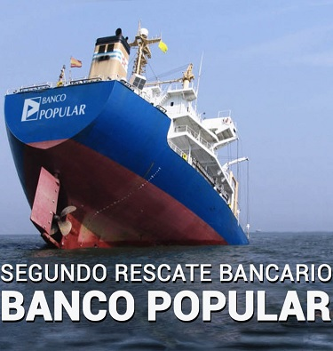

The popular bank is a Spanish bank founded in 1926 that has become the fifth most important bank in the country.
Since the late nineties began its meteoric rise integrating in all the Spanish autonomous communities. I also have presence in Portugal and South America. However, he made several very serious mistakes that have ended up paying the usual ones, the investors and customers of the bank. The one who created this disaster while he was alive was Luis Valls who mortgaged the bank entering the real estate business, granting millionaire loans without calculating the risk of these operations. And it is that I am already buying at the end of the crisis the mortgages that other banks sold, knowing what was to come.
However, after the housing crisis in Spain many other banks decided to get rid of the assets by sending them to the bad bank, the SAREB, assuming losses. And it is that, it is better to assume losses soon, than to lose everything .
After the death of Valls Angel happened to him Ron, and it is that the saying already says it, another will come that good will do to me.
The bank will be controlled by Ron from 2006, which will be a whole fool management in which will be dedicated to further indebt the bank buying broken corporations or making other banks as the Banco Pastor, which was absorbed 100% in 2011. These acquisitions if they had been accommodated to the bank with time and had been invested intelligently the dammage of the crisis could be subsaned. To give an example, in 2009 was the perfect time to start accumulating shares of companies that had suffered a huge erosion by the crisis of Lehman Brothers and buy commodities like gold or silver. Well, the bank was still investing in houses.
After the final puncture of the bubble in late 2009 and entered the real crisis in Spain with a daily job destruction the bank would be enraged to sell its toxic assets such as mortgages and brick. In 2012, year in which Spain rubbed the record of unemployment, the bank already accumulated some losses difficult to recover. However, all this data was covered and it was continued as if nothing would happen, to see if there were better winds and assets were revalued. And it is that in economy you can not wait and risk everything and that is basically the management of Angel Ron, the immobilism .

The capitalization of the company increased from 8700 million in 2014 to 5000 million in 2015. And it would have to go down even more, up to the 1300 million that it closed with accounts that revealed a huge debt, that is, a negative real capitalization. . If we look at the graph that the share price has decreased from 5 euros, in 2014, to 0.5 euros when it went bankrupt. That is, 90% and the capitalization a somewhat lower figure from 5,000 million to just 1,300 million. However the actual capitalization if it has fallen and much more because year after year the Popular investor had to subscribe shares so as not to lose what little he had. This investment, let's say to save the bank, was charged by managers and employees until the following year when another new expansion was made.

This bank, apart from the evaporated money record, also has another record, being the bank with the largest capital increases.
And is that since the bad winds began to blow in 2008 the bank has made the small figure of 47 capital increases. And it is that although in the previous graph there are only signs of an extension, it is because that is the one that disbands more the technical graph difficult to follow if only the price of the action is sustained. This is because that year a contrasplit of 5 to 1 was made to decrease the number of shares and give it more value.
It can only be said that in order to save Popular from bankruptcy, another expansion worth 3,000 million dollars would have been made, 3 times more than the value it has on the stock market, that is, a 66% dilution. This robbery has not only been possible by one person.
Here other figures have played a great role but they are always marked to the presidents or leaders of the companies, although they are the ones who put or take away people, then they are the most responsible.
However, it seems a lie that the CNMV has allowed these setbacks. Any securities regulator from a first-world country would have put this bank outside the IBEX35. But in Spain the corruption is in all the entities and where it would not be missing is in the place where the greatest wealth of the country is found.
Says the rats are the first to leave the boat, so Angel Ron left the presidency of Popular in 2016, and the path to succeed him was Saracho, an expert in business banking and valuation of financial assets . While I did not know the ins and outs of commercial banking. Mr. Emilio Saracho was placed by some top finger to channel the absorption of this by Banco Santander at an affordable price for the latter. With this the Santander would have made a large space in Spain and insurance that would have been paid to those responsible as Saracho, counselors and advisors for these actions. In the image below, Angel Ron and Emilio Saracho, last and most responsible for Banco Popular.

At the end of April, the bank begins to suffer the constant pressure of the bears, in which the CNMV does not update correctly and it is still not known whether, on purpose or inadvertently, the short positions on the bank.
They suffer a huge pulse between the entities that want to eat the bank and the vulture funds, in which the small minority that still continues to decide to leave. But there will still be a bigger scam because in statements to newspapers the head of the bank lied about the financial situation encouraging the purchase of shares. In the last moments of the quotation already finished on Friday, mandatory maxima of the two banks would meet together with people of the government and the acquisition of the bank would be real for one euro. For this the petition would be sent to the European Union and it would be admitted.
 However, Banco Santander's flagship operation has turned out to be more negative than positive since many of the former bank's clients decided to go to other banks and due to the alleged involvement of Banco Santander in the last devaluation of the Popular, Santander has lost a good reputation within the financial sector, more than what could be obtained in the long term with the aforementioned bank.
However, Banco Santander's flagship operation has turned out to be more negative than positive since many of the former bank's clients decided to go to other banks and due to the alleged involvement of Banco Santander in the last devaluation of the Popular, Santander has lost a good reputation within the financial sector, more than what could be obtained in the long term with the aforementioned bank.
Everything points to the fact that the bank Santander already in March would not be interested in taking the Popular bank at any price and in the end it would take it perhaps due to internal pressures from the central government. To avoid possible bankruptcy of the same on the stock market and the use of capital by foreign brokers.
And sometimes, despite presuming liberals when we lose, we are capable of being more interventionist than Venezuela.
All these illegality and irresponsibility are still investigated and people have already passed by court sometimes although the victims of this scam have not yet received the money they lost. Today all the assets of the bank are in the hands of Banco Santader, an entity chaired by Ana Botín, image on the right.
© 2016 - All Rights Reserved - Diseñada por Sergio López Martínez
![[Valid RSS]](https://www.feedvalidator.org/images/valid-rss-rogers.png "Validate my RSS feed")